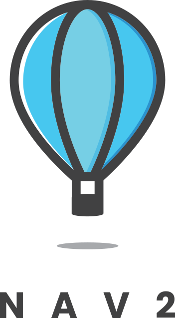
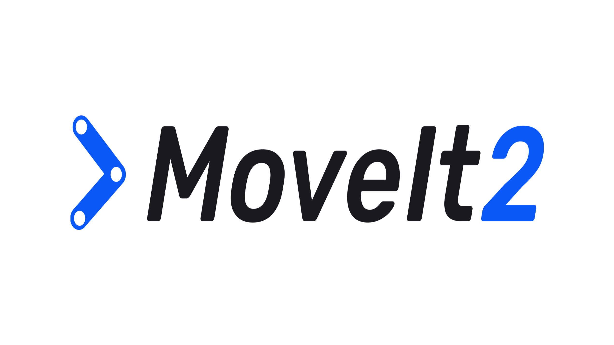
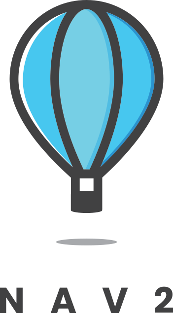
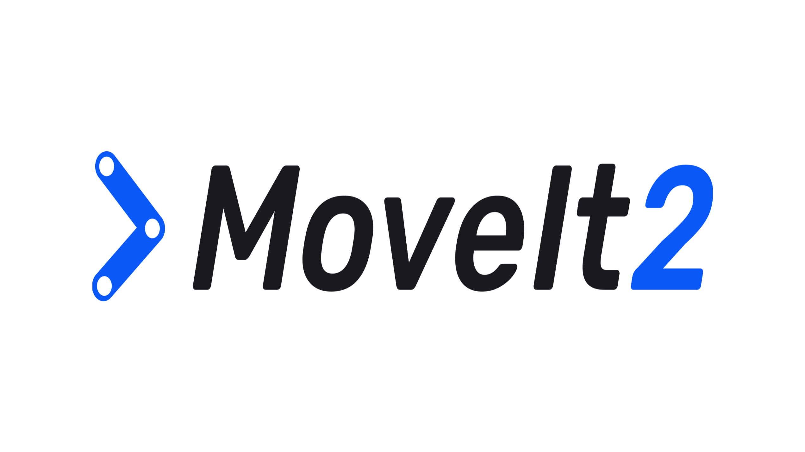

Robotics Engineer with expertise in designing, developing, and testing robotic systems for mobile robots, manipulators, and drones. Experienced in real-time operating systems, GUIs, kinematic and dynamic modeling, simulation, and quality management.

MSc in Aerial Robotics
September 2022 - September 2023
Aerial robotics
Aerospace dynamics
Introduction to artificial intelligence
Uncertainty modelling for intelligent systems
Robotics systems

B.Tech in Electronics and Communication Engineering
July 2015 - May 2019
Data Structures
Embedded Systems
Operating Systems
VLSI Design
Control Systems
Semiconductor Devices
Mar 2024 – Present
Key Technologies: PX4 Autopilot, MAVLink, Vicon, EVO Evaluation Toolkit
August 2020 – July 2022
Key Technologies: RTOS, EtherCAT, EasyCAT, ACTIN, MoveIt, OptiTrack, Qt/QML, ISO 13485
July 2019 – July 2020
Key Technologies: ROS, SLAM, Autoware, C++/Python, CARLA, Gazebo, OpenCV, PCL
June 2019 – August 2019


 





Exploring the role of AI in modern robotics applications.
An overview of SLAM techniques in autonomous navigation.
58 Gate House Avenue, Bristol, UK, BS13 9AE
tarunkumarmpc@gmail.com